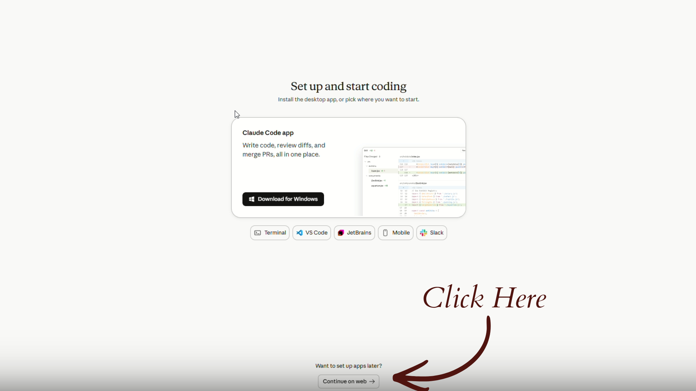
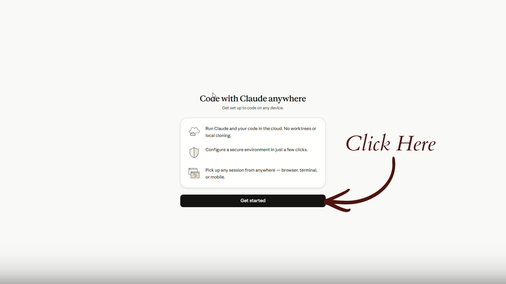
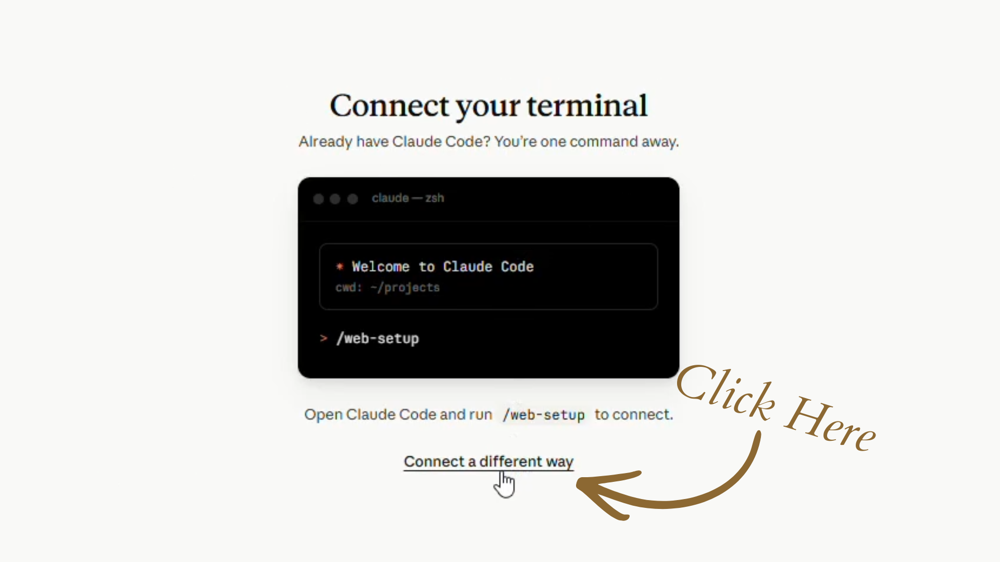
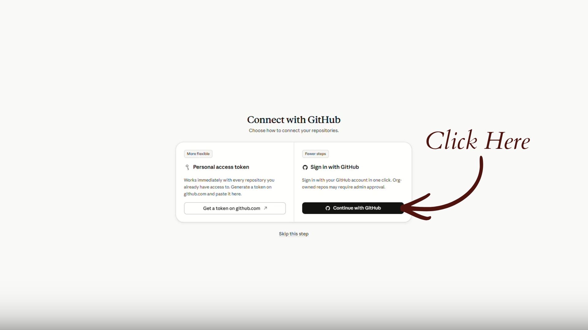
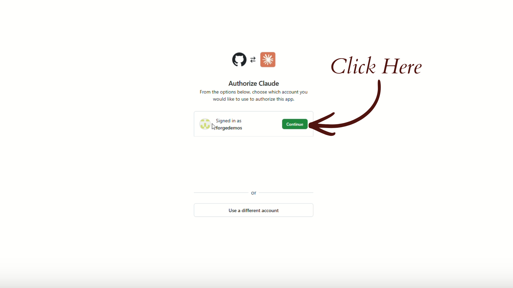
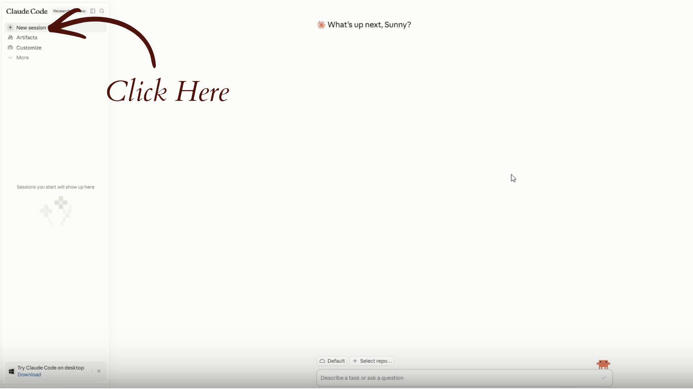
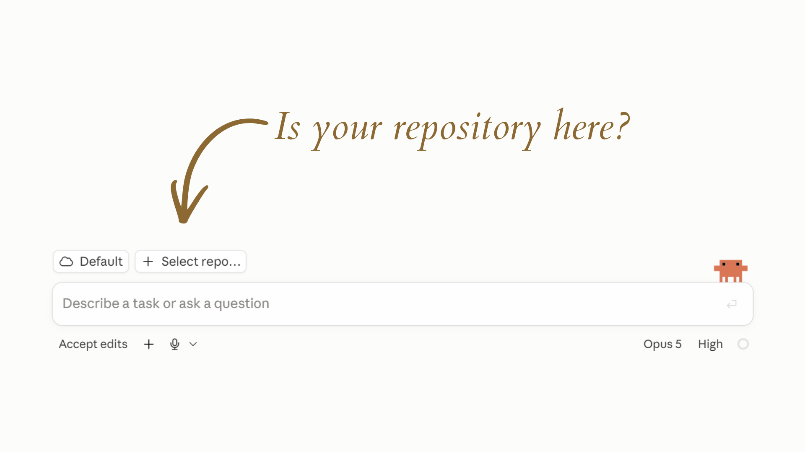

The chat gets good, and then it's gone
You know the feeling. The conversation finally clicks. Claude understands your offer, your voice, your people. Then the tab closes, and tomorrow you start from zero and paste it all back in.
You have gotten very good at pasting, which is the sad part.
Claude Code is Claude with a folder. Your voice, your offers, who you serve, your client notes and your projects sit in files, and it opens them before it answers you. It comes with your Claude account, it runs in your browser, and there is nothing to install.
Which means it can do four things a chat window cannot:
- Start already knowing your business, every time, with no pasting.
- Write new files and update old ones, so what you decide today is still there next month.
- Do the task rather than describe it. It drafts the post, saves it, and files it where it belongs.
- Hand you everything. The files are plain text on your own account. They work with any AI, and nobody can take them back.
Today we build that.
Two of these have nothing to do with code
My Forge Director plans my day with me
Every morning I sit down and we look at what's open. He already knows my business, so there's no pasting in context or re-explaining myself. He reads what we worked on yesterday, adds new ideas into my projects folder, marks the finished ones done, and pulls up any file I need right there on the screen.
Ten or fifteen minutes, and then I decide what gets my day. Every other time I've used AI, I was the one holding all of it: the organizing, the saving, the finding, the remembering, the dates. Here we're actually working together.
No code. I just talk to him.My weekly content runs on a routine
Creating content used to eat at least three hours of my week, every week, one brand at a time. Before I did it myself, I paid a VA $700 a month for the same job.
Now I save the insights I collect through the week. A scheduled task fires, and Claude builds a full batch across both brands: around thirty-two pieces, roughly sixteen each. Single-image posts, carousels, e-blasts, sometimes a blog. Another routine pushes the finished batch into Buffer where I schedule from.
I still review and refine every piece before it goes out. That part stays mine on purpose, because the voice matters too much to hand off. The blank page is what's gone, and the hours went with it.
Still no code. I set it up by describing what I wanted.I build small tools for my members
Spread guides, trackers, workbooks, artifact templates people can click through and actually use. I have never written a line of code in my life. I describe the tool the way I'd describe it to a person, and Claude handles the technical steps.
The intimidation was always the real cost. There's a short list of one-time setup steps, and after that it's conversation.
Building here uses less of your usage than building the same thing in a chatA filing cabinet with your name on it
Before anything gets built, ten minutes on vocabulary. I used GitHub for months, published real things my students use, and could not have told you what a branch was. Nobody's business should depend on words she's afraid of.
index.html.
That name has to be index.html exactly, all lowercase, because a server looks for that exact spelling and nothing else. One capital letter and the page will not load.
How a drawer becomes a website
GitHub Pages is a setting you turn on for one drawer. Turn it on and that drawer gets its own address on the internet, free, and anyone with the link can open it. That is how every tool I have ever published exists. No web host, no monthly fee, no developer.
Screenshot this part
When Claude Code, or a tutorial, or anybody's video says one of these words, this is what they mean.
The day I almost quit pushing
Months ago I asked Claude to publish something, and afterward I found a second folder in my repo that I didn't recognize. My rule was one repo, one website, so I decided something was broken and I quietly stopped letting Claude publish anything. For months.
What had actually happened: it added a second page. A folder with an index.html in it, a second room in the same house, live at its own address. Everything was fine.
I lost months of help to one missing definition. That's the entire reason we just did the vocabulary.
Two accounts, and that's the whole list
A Claude plan at Pro or above, because Claude Code in the browser isn't on the free plan. And a free GitHub account. Nothing to install, ever.
Get a GitHub account
GitHub is where your folder lives. A filing cabinet that sits online instead of on your desk, so it's there whether you're on your laptop, your phone, or somebody else's computer.
- Go to github.com/signup
- Use an email you actually check
- Slow down on the username. Read the note below first.
yourname.github.io/the-thing/. Every tracker, quiz and client tool carries that name in the link. Pick it the way you'd pick a business email. The handle you made in 2009 is going to look strange in a link you send a paying client.Copy your filing cabinet
In GitHub a filing cabinet is called a repository. Ugly word, simple thing. A folder that holds other folders.
You don't have to build yours. It exists as a template with every folder already named and waiting. You're making your own copy.
- Open the Claude Code Starter Kit
- Click the green Use this template, then Create a new repository
- Name it biz-brain, lowercase, with the hyphen
- Leave Include all branches unchecked
- Click Private. This matters. Your client notes and your offers are in here.
- Click Create repository
CLAUDE.md holding the standing instructions Claude reads at the start of every session.Install the Claude app on your GitHub
This is where Claude gets permission to open your files. About a minute.

images/slide-1.png

images/slide-2.png

images/slide-3.png

images/slide-4.png

images/slide-5.png

images/slide-6.png

images/slide-7.png
1 / 7"Set up and start coding." Scroll down and click "Continue on web." The big Download button is the loudest thing on this screen and it isn't the one you want. What you're looking for sits near the bottom, under "Want to set up apps later?"
2 / 7"Code with Claude anywhere." Click Get started.
3 / 7"Connect your terminal." Ignore the terminal and click "Connect a different way." The black box is for people who already installed Claude Code on their computer. You're staying in the browser, so the link underneath is yours.
4 / 7"Connect with GitHub." Click Continue with GitHub on the right, the one marked Fewer steps. The Personal access token option on the left is a longer road to the same place.
5 / 7"Authorize Claude." Check the username, then click Continue. Make sure it's the account that owns biz-brain.
6 / 7Click New session.
7 / 7Now the real test: is your repository there? Click Select repo and look for biz-brain. If it's missing, you've hit the most common wall in this whole setup, and the fix is right below.
- Go to claude.ai/code and sign in
- On "Setup and start coding," click "want to set up apps later, continue on the web." It sits below the bigger buttons, so look down the page for it.
- Click Get Started
- Click "connect a different way," then Sign in with GitHub
- GitHub asks which account. Pick the one that owns
biz-brain. - GitHub asks which repositories. Choose All repositories, or select
biz-brain. - Click Install
You may be asked to create a cloud environment. The defaults are right. Give it any name and click Create environment. If you're never asked, nothing is wrong.
Back at claude.ai/code, click the repository selector under the message box and choose biz-brain.
No repositories in the list?
The most common wall, and almost always the same cause: Claude knows who you are, but was never given the key to your files. Logging in with GitHub and installing the Claude app on that account are two separate things. Nothing warns you. The list just comes back empty.
- Install it directly at github.com/apps/claude/installations/new
Choose the account that owns your repo, choose All repositories or select biz-brain, click Install, then reload claude.ai/code.
Fill the drawers
Empty folders do nothing. This is the step that turns a tidy structure into an assistant that knows you.
Open a normal Claude conversation, the regular chat and not Claude Code, and paste this:
[FILL IN]. That's the tool being honest. An invented price becomes the source of truth for every piece of copy after it.Copy the whole block. Go back to Claude Code, paste it in, and put this underneath:
business-brain-dump.md in the repo. Expected. You pasted the text rather than committing a file, so there's nothing to look for.[FILL IN] is a real gap. Anything not marked is something Claude believes about your business. Check the prices. Check the offer names.Make the holes chase you
You will not have filled everything in. Nobody does. Those [FILL IN] markers will still be there in March unless something goes looking for them.
It's set up. Now what?
When I first got Claude Code running, I asked the person who walked me through it exactly that. She sent me a link to book a private session with her for a hundred and sixty dollars.
I made my own way instead, and it worked, and it took a lot longer than it needed to. So here is the part nobody gave me: what to actually do with this thing, and people to do it beside.
What you get for $8 a month
Live sessions where we build on your business while you watch. Beginner classrooms that assume nothing. Every tool I have already made, ready to use. And me working through all of this out loud, every week, with tarot readers and coaches figuring it out at the same time you are.
Your bonus, two live sessions, and a classroom
Give every client a home
Read CLAUDE.md. Make a clients folder with one file per client. Ask me about my current clients one at a time, and for each one capture what she bought, what she's working on, and how she likes to be spoken to…
Your own link in bio page
Build me a single-page links page using my brand colours, which are [your colours]. It needs my name, one line about what I do taken from context/who-i-am.md, and links to [list your links]…
50 prompts · a copy button on every one
50 First Prompts for Your Business Brain
Fifty prompts that only work once your files exist, and as of today, yours do. Content, client work, offers, your weekly rhythm. Copy one, paste it in, and watch Claude answer using everything it now knows about your business. Yours to keep if you start your trial in the next 48 hours.
Triage Session · 4pm PT
Bring whatever step has you stuck. Share your screen and we get it working together, live. If something today didn't land, this is where it gets fixed.
Build Your Forge Director · 11am PT
We set up the daily working rhythm I use every morning, on your business, in one sitting. Your projects, your clients, your real deadlines. It holds all the pieces. You make the decisions.
Create Your Brand Skill
A seven day build where you teach Claude to sound like you, one piece a day. If you've ever deleted an AI draft because it read like a stranger wrote it, this is the fix.
The classrooms
Four are built and waiting the moment you walk in. Nothing drips out week by week.
Claude for Beginners
A new video every single day. One win at a time, start to finish, nothing assumed. Members watch it grow in real time.
Building with Claude
Your complete Claude build hub. How to use Claude as a real business tool, with the artifacts and workflows to prove it.
The Alchemist's AI Toolkit
Artifact templates, prompts, and interactive business tools for your offers, your content, and your practice. Thirty of them, and your own builds can be featured in there too.
AI Sales Page Mastery
For spiritual business owners who want a sales page that feels as magical as the work, and still sells. Eleven magical templates inside.
Skills, Automations & Workflows
Where setting it up turns into it running without you. The next classroom being built, and the natural place to go once your business brain is filled in.
Come build the rest of it with us
You keep what you made today either way. The community is for everything you build after it.
Start your free trialBuild your Anvil
A filing cabinet holds your business. An anvil is where you shape something with it.
We're all going to run one prompt. It reads the files you just filled in, works out which project you should do first, and builds you a web page holding that project and five more, each with the prompt to start it.
Then we put it on the internet, and you leave with a web address you made.
Everyone's page comes out named after their own business, and everyone's first project is different, because everyone's files are different. That's the whole point of the last ninety minutes.
biz-brain, not in a regular chat. The whole trick is that it reads your files before it answers.Six projects, each one a thing you keep and a move you learn
- Fill your gaps. Real files instead of placeholders, and a standing rule that makes the folder improve itself.
- Make it check your voice. A sharper voice file, and the idea that your files are a standard to measure against.
- Turn a correction into a rule. One rule that sticks forever, and why saying do this beats repeating don't do that.
- A week of content from one recording. Actual posts, from feeding it your raw material instead of asking it to invent.
- Build one small tool. A tracker or worksheet that works, and the realisation that you can make software by describing it.
- Let it play your client. The questions your messaging can't answer yet, and how to hand Claude a role so it pokes holes in your work.
The prompt
It's long. That's on purpose, and you only run it once.
Three clicks and it's live
Claude can write the file and push it. It cannot make a new repo for you or turn the publish setting on, so this last bit is yours. It takes about three minutes and it's the same move you already did once today.
- Make a new repo called
anvil. Go to github.com/new. Name itanvil, choose Public this time, and tick "Add a README file" before you create it. - Put your page in it. Claude just wrote the page. Add it to the new repo as
index.html, all lowercase. - Turn on Pages. In that repo: Settings, then Pages. Under Build and deployment set Source to Deploy from a branch, branch
main, folder/ (root), then Save.
main and saves you standing there wondering why the branch list is empty.biz-brain never becomes public. Only this one page moves across, and the prompt already told Claude to keep client names off it.What you just did
You set up Claude Code, gave it a permanent memory of your business, had it read that memory and decide what you should work on next, built a web page out of the answer, and published it to the internet.
Ninety minutes, and you have never written a line of code.
Keep this page
Your ticks are saved on this device. Come back whenever a step slips.
The written Starter guide Join the community